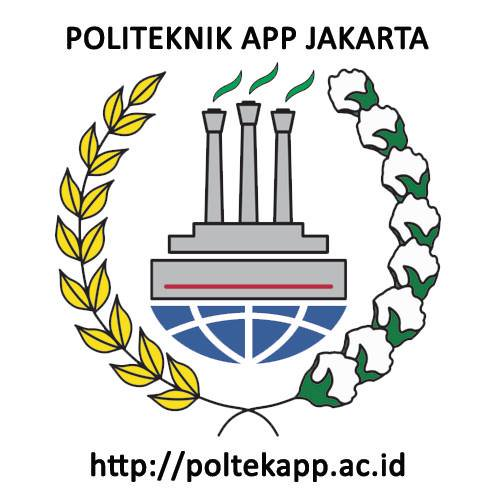
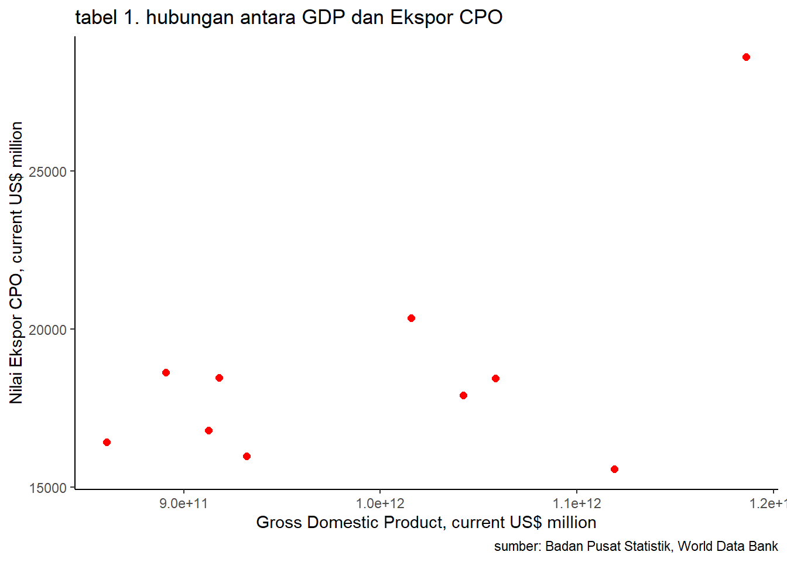

library(tidyverse)
library(readxl)ANALISIS HUBUNGAN EKSPOR CRUDE PALM OIL INDONESIA TERHADAP GDP INDONESIA, TAHUN 2012-2021
Metode Penelitian Politeknik APP Jakarta

1 Pendahuluan
1.1 Latar belakang
Perdagangan internasional adalah pertukaran barang atau jasa maupun faktor-faktor lain yang melewati perbatasan suatu negara, dan memberikan dampak bagi perekonomian domestik maupun global. Indonesia menjadi salah satu negara yang memiliki keunggulan dalam sumber daya alamnyabaik dalam bidang pertanian maupun perkebunan, dan salah satu komoditas yang menjadi unggulan negara Indonesia adalah crude palm oil (CPO) yang berasal dari minyak nabati yang didapatkan dari buah pohon kelapa sawit. CPO secara alami berwarna merah karena kandungan alfa dan beta-karotenoid yang tinggi. CPO biasa menjadi bahan baku untuk makanan salah satunya minyak goreng. Produksi CPO di Indonesia menjadi komoditas perkebunan paling tinggi di banding dengan komoditas lainnya, yang juga ikut serta dalam pertumbuhan ekonomi Indonesia sebagai komoditi unggulan yang banyak dibutuhkan banyak negara.
1.2 Ruang lingkup
Ruang lingkup pada pembahasan masalah kali ini sesuai dengan variable yang akan digunakan pada analisis kali ini, yaitu mengenai data ekspor CPO terhadap GDP Indonesia. Batasan masalah berperan dalam membantu mengidentifikasi masalah yang akan dibahas dan membatasi jangkauan masalah yang akan dibahas.
1.3 Rumusan masalah
Melihat pengaruh ekspor CPO terhadap GDP Indonesia?
Apakah ekspor cpo memiliki dampak besar terhadap GDP Indonesia?
1.4 Tujuan dan manfaat penelitian
- Untuk mengetahui seberapa besar pengaruh CPO terhadap GDP Indonesia.
- Untuk mengetahui apakah ekspor CPO memiliki pengaruh besar terhadap GDP Indonesia.
1.5 Package
Packages yang digunakan antara lain sebagai berikut:
2 Studi pustaka
2.1 Perdagangan Internasional
Penelitian dari (Salomo M. R ,2007:8) menyebutkan dalam jangka panjang ekspor dan impor berpengaruh signifikan terhadap pertumbuhan ekonomi dan menyimpulkan bahwa ekspor adalah mesin dari pertumbuhan ekonomi atau Export Led Growth. Perdagangan internasional bertujuan untuk mendapaatkan manfaat atau gains of trade dari perdagangan itu sendiri, manfaat yang nyata bagi suatu negara diantaranya pertumbuhan ekonomi untuk negara itu sendiri.
2.2 Ekspor
Ekspor adalah mengeluarkan barang dari peredaran dalam masyarakat dan mengirimkan ke luar negeri sesuai ketentuan pemerintah dan mengharapkan pembayaran dalam valuta asing (Amir M.S. 2009;1). Ekspor sendiri memiliki tujuan seperti mengendalikan harga produk di dalam negeri. Menungkatkan laba perusahaan melalui perluasan pasar, menambah devisa negara dan turut serta dalam pertumbuhan industri serta perekonomian dalam negeri. Dalam perdagangan internasional, terdapat beberapa kebijakan terkait kegiatan ekpor maupun impor seperti, larangan impor, kuota, dumping dan kebijakan lainnya.
2.3 CPO
Crude Palm Oil (CPO) atau minyak kelapa sawit adalah minyak nabati edibel yang didapatkan dari mesocarp buah pohon kelapa sawit, umumnya dari spesies Elaeis guineensis dan sedikit dari spesies Elaeis oleifera dan Attalea maripa. (Reeves,1979) Crude Palm Oil atau CPO merupakan minyak kelapa sawit mentah yang diperoleh dari hasil ekstraksi daging buah kelapa sawit yang belum mengalami pemurnian. Indonesia merupakan negara penghasil CPO terbesar di dunia dengan luas tutupan lahan kelapa sawait sebesar 16,38 juta hektar dan memiliki produksi 46,8 juta ton. CPO menjadi bahan baku industri pembuatan minyak goreng, mergarine, lilin, sabun, hingga pembuatan biodisel yang banyak di produksi di Uni Eropa.
2.4 GDP
Produk Domestik Bruto (PDB) atau dalam bahasa Inggrisnya Gross Domestic Product (GDP) adalah nilai barang dan jasa dalam suatu negara yang diproduksikan oleh faktor-faktor produksi milik warga negara dan negara asing. (Sukirno, 2013:35). GDP atau PDB adalah salah satu konsep pendapatan nasional. GDP adalah jumlah produk berupa barang dan jasa, yang dihasilkan oleh unit-unit produksi di dalam batas wilayah suatu negara (domestik) selama satu tahun. GDP dapat menjadi indikator untuk mengukur kemajuan perekonomian suatu negara dari waktu ke waktu, menilai kinerja ekonomi suatu negara hingga mengetahui pertumbuhan ekonomi dan pendapatan per kapita.
2.5 Kerangka Penelitian
3 Metode penelitian
3.1 Data
| Tahun | GDP INDONESIA |
|---|---|
| 2012 | 9,1787E+11 |
| 2013 | 9,12524E+11 |
| 2014 | 8,90815E+11 |
| 2015 | 8,60854E+11 |
| 2016 | 9,31877E+11 |
| 2017 | 1,01562E+12 |
| 2018 | 1,04227E+12 |
| 2019 | 1,1191E+12 |
| 2020 | 1,05869E+12 |
| 2021 | 1,18609E+12 |
| Tahun | NILAI EKSPOR CPO (US $) |
|---|---|
| 2012 | 18461,5 |
| 2013 | 16787,5 |
| 2014 | 18615 |
| 2015 | 16427 |
| 2016 | 15966,4 |
| 2017 | 20340,9 |
| 2018 | 17898,8 |
| 2019 | 15574,4 |
| 2020 | 18444 |
| 2021 | 28606 |
penelitian ini menggunakan data yang bersumber dari BPS dan WDB
dat<-read_excel('datayogha.xlsx')
ggplot(data=dat,aes(x=gdp,y=ecpo)) +
geom_point(color="red",size=2) + # setiap nambah command, selalu kasih tanda +
labs(title="tabel 1. hubungan antara GDP dan Ekspor CPO",
x="Gross Domestic Product, current US$ million",
y="Nilai Ekspor CPO, current US$ million",
caption = "sumber: Badan Pusat Statistik, World Data Bank") +
theme_classic()
3.2 Metode analisis
Metode yang dipilih adalah Ordinary Least Square (OLS) dengan 1 variabel independen. Penelitian ini bermaksud untuk mencari hubungan antara Ekspor CPO dan GDP Indonesia.Dengan data yang sudah ada untuk di regresi dan ditampilkan Secara spesifikasi adalah sebagai berikut:
\[ y_{t}=\beta_0 + \beta_1 x_t+\mu_t \] di mana \(y_t\) adalah GDP Indonesia dan \(x_t\) adalah Ekspor CPO.
4 Pembahasan
4.1 Pembahasan masalah
Pada laporan penelitian yang berjudul Analisis Hubungan Ekspor CPO Terhadap GDP Indonesia, Tahun 2012-2021, yang menggunakan data GDP Indonesia 2012-2021 serta data Ekpor CPO Indonesia 2012-2021.Tujuan dari penelitian ini adalah untuk mengetahui hubungan antara ekspor CPO dengan GDP Indonesia.
4.2 Analisis masalah
Hasil regresinya adalah
reg1<-lm(gdp~ecpo,data=dat)
summary(reg1)
Call:
lm(formula = gdp ~ ecpo, data = dat)
Residuals:
Min 1Q Median 3Q Max
-1.011e+11 -6.578e+10 -1.043e+10 5.331e+10 1.783e+11
Coefficients:
Estimate Std. Error t value Pr(>|t|)
(Intercept) 6.788e+11 1.555e+11 4.364 0.0024 **
ecpo 1.682e+07 8.165e+06 2.060 0.0733 .
---
Signif. codes: 0 '***' 0.001 '**' 0.01 '*' 0.05 '.' 0.1 ' ' 1
Residual standard error: 9.225e+10 on 8 degrees of freedom
Multiple R-squared: 0.3467, Adjusted R-squared: 0.265
F-statistic: 4.245 on 1 and 8 DF, p-value: 0.073335 Kesimpulan
Hasil dari regresi yang telah dilakukan pada data diatas dapat dilihat bahwa setiap nilai ekspor CPO yang dilakukan akan mempengaruhi hasil GDP Indonesia. Setiap penjualan ekspor atau jika ekspor mengalami penjualan sebesar 1.000.000 USD meningkatkan GDP Indonesia sebesar 16.820.000.000 USD. Jadi dapat disimpulkan bahwa CPO produksi Indonesia ikut serta dan memberi berpengaruh besar terhadap Hasil nilai GDP Indonesia.
6 Referensi
radifan, fakhrus. (2014). FAKTOR-FAKTOR YANG MEMPENGARUHI EKSPOR CRUDE PALM OIL INDONESIA DALAM PERDAGANGAN INTERNASIONAL. Universitas Negeri Semarang, 3(2). https://doi.org/10.15294/edaj.v3i2.3829
Badan Pusat Statistik. (n.d.). Retrieved January 20, 2023, from https://www.bps.go.id/statictable/2014/09/08/1026/ekspor-minyak-kelapa-sawit-menurut-negara-tujuan-utama-2012-2021.html
GDP (current US$)—Indonesia | Data. (n.d.). Retrieved January 20, 2023, from https://data.worldbank.org/indicator/NY.GDP.MKTP.CD?locations=ID